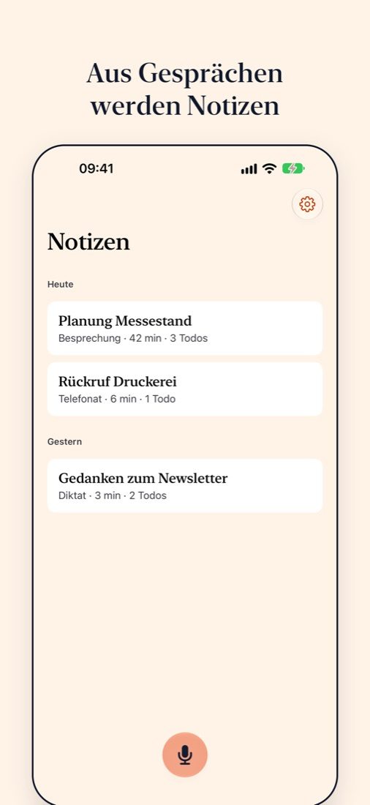
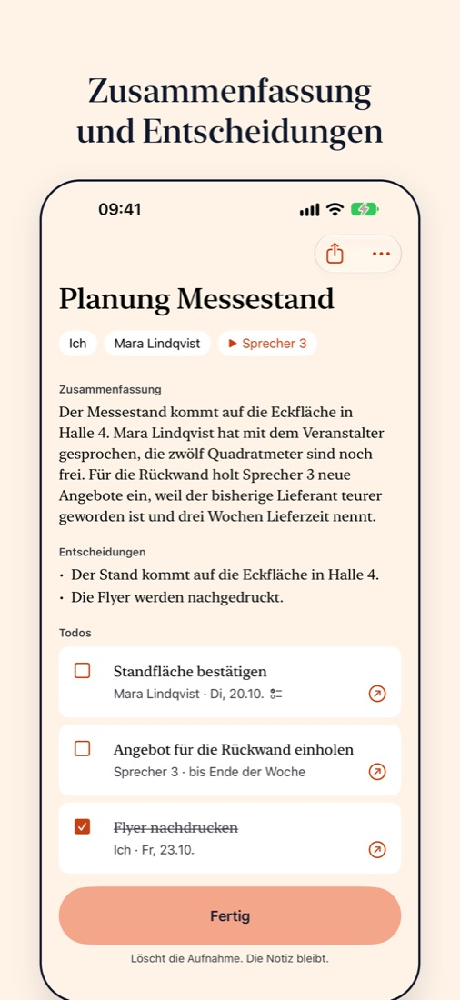
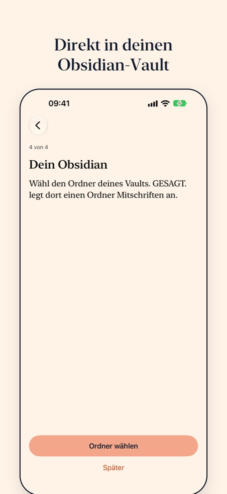

GESAGT.
Nimmt Besprechungen, Telefonate und Diktate auf und schreibt daraus eine Notiz mit Transkript, Zusammenfassung und Todos. Alles läuft auf deinem iPhone.



Wer hat was gesagt
GESAGT. trennt die Sprecher und erkennt dich an deiner Stimme. Die anderen benennst du nach der Aufnahme. Jedes Todo verweist auf die Stelle im Gespräch, aus der es stammt.
Direkt in Obsidian
Jede Notiz landet als Markdown-Datei in deinem Vault, mit Frontmatter, Todos im Format des Tasks-Plugins und dem Transkript zum Aufklappen.
Ohne Konto und ohne Upload
Die App schickt keine Aufnahme und keinen Text an einen Server. Das Audio wird gelöscht, sobald die Notiz fertig ist. Einzelheiten stehen in der Datenschutzerklärung.